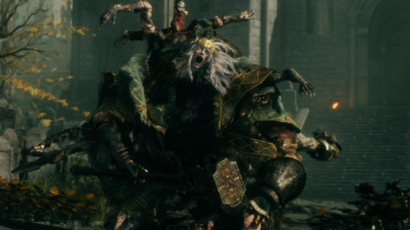
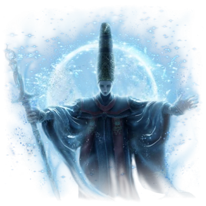
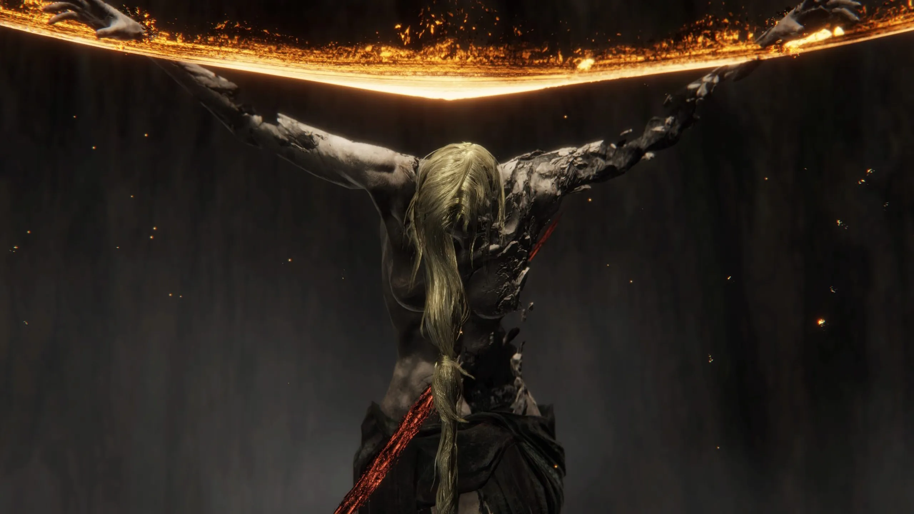

Godrick Kneels Before Malenia
After being thoroughly thrashed by Malenia Hand
of
Miquella, Godrick the Grafted
(most recent in the bloodline of Godfrey of the
golden lineage) was brought low and humiliated
by the demigod of Radagon's line. Godrick
managed to
escape being executed by licking the boots
of the victorious demigod and continues to live
in
squalor in stormwind castle while slowly
grafting
more of his subjects onto his body.

Queen Rennala and Her Dystopic Library
Grief Stricken and heartbroken following Radagon
betraying her to become a god
Queen Rennala holed herself up in her library
where
she has been using her great rune of
the unborn to continously rebirth her former
scholars. This has left them in a childlike
dream
state and the former researchers now crawl along
the
floor and sing for thier so called "mother"

Marika and Radagon are the Same Person?!
After thorough investigation of the lands
between.
We have uncovered that the Queen and current
Elden
Lord
are actually dual personalities of the Greater
Will.
This may come as a shock, but after seeing the
two
in person
we find that their bodies are stone, and the
broken
pieces are entirely filled with glowing runes.
They
seem
to now exist solely as servants to the greater
will.